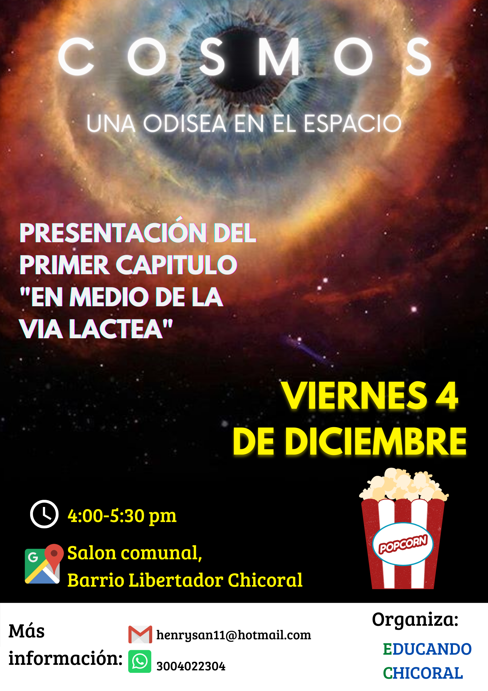
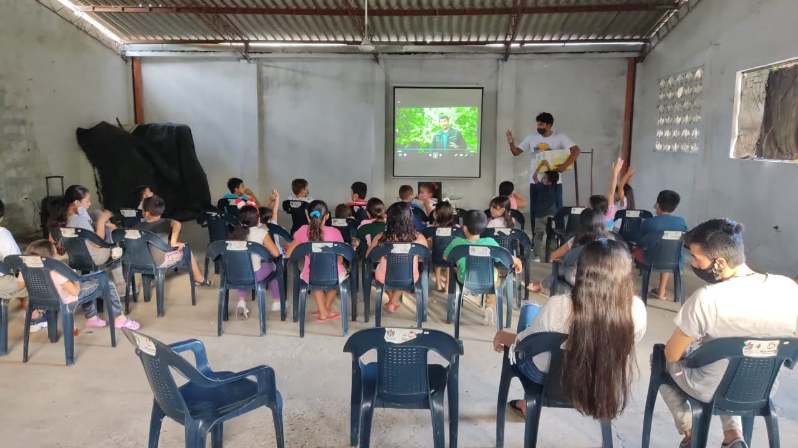
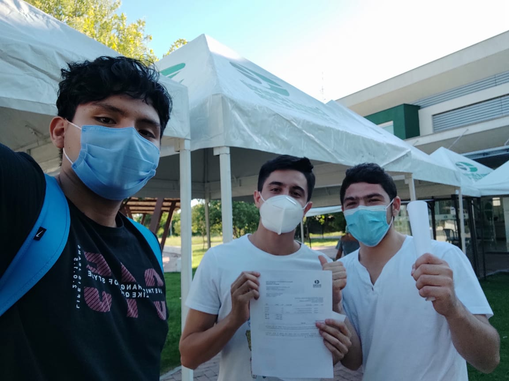
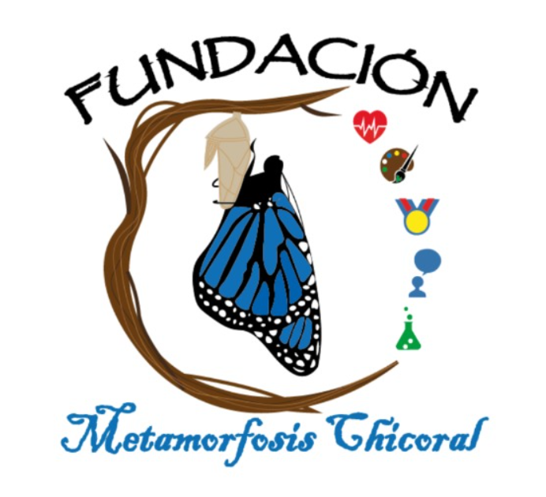
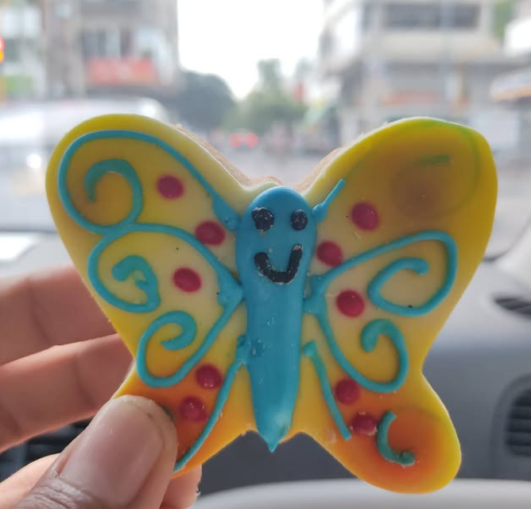

¿Y si Chicoral y toda la región pudiera ser más?
En plena pandemia, sin ser aún una organización, solo un grupo de amigos, organizamos el primer cineforo de la serie "Cosmos: Una odisea en el espacio" en el salón comunal del Barrio Libertador. Palomitas caseras, gaseosas, tapabocas y gel antibacterial. Lo pensamos para jóvenes — pero fueron los niños quienes llegaron, sesión tras sesión, hasta ser 25 pequeños mirando el universo con ojos grandes. Esos niños nos enseñaron quiénes debían ser nuestro público objetivo.


Evaluamos lo que habíamos logrado y el cineforo nos demostró que había un pueblo esperando ser transformado. Entendimos que para seguir trabajando por más personas y responder las preguntas que nos inquietaban, no bastaba con la buena voluntad — necesitábamos ser algo más que un grupo de amigos. Necesitábamos estructura, legalidad y compromiso formal. La decisión fue clara: constituirnos como fundación y hacerlo bien.
El 21 de mayo de 2021, la Cámara de Comercio del Sur y Oriente del Tolima expide el certificado de existencia y representación legal de la Fundación Metamorfosis Chicoral, con NIT 901.487.829-7. Ese papel representaba mucho más que un trámite, era la culminación de meses de debates, noches de planificación y la valentía de un grupo de jóvenes que decidieron apostarle al futuro de su pueblo.
Desde ese día, la fundación existe legalmente para cumplir una sola misión: que cada niño y joven de Chicoral tenga acceso a mejores oportunidades. Que el arte, la ciencia, el deporte, la salud y el sentido de comunidad no sean privilegios sino derechos de todos en Chicoral y la región.
Hoy, más de cuatro años después, seguimos aquí. Activos. Transformando.
Verificar en RUES · NIT 901.487.829-7

